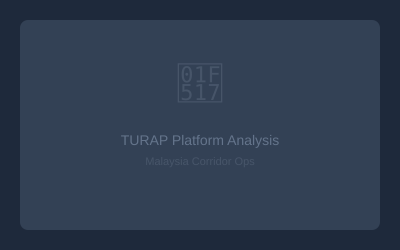

Platform
TURAP Malaysia 2026: Complete Guide to the Proposed Recruitment Platform
Bestinet's proposed TURAP platform could reshape Bangladesh-Malaysia recruitment — but it's NOT approved yet. Current status, fees ($1,000/worker), opposition, and what it means for employers and workers.
Read More →